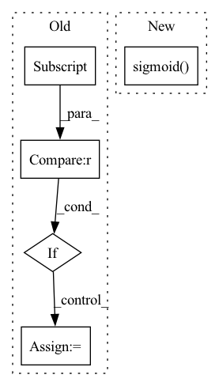

Pattern ID :6108

Before Change
if output.shape[-1] == target.shape[-1]:
pass
else:
depth = output.shape[-1]
target = pd.fluid.layers.one_hot(target, depth=depth)
out = pd.fluid.layers.sigmoid_cross_entropy_with_logits(x=output, label=target)
out = pd.fluid.layers.reduce_mean(out)
After Change
return F.binary_cross_entropy(F.sigmoid(output), target, reduction=reduction)
def binary_cross_entropy(output, target, reduction="mean"):
In pattern: SUPERPATTERN
Frequency: 3
Non-data size: 5
Instances
Fragment ID: 21127954
Project Name: tensorlayer/tensorlayerx
Commit Name: 21bf2328ccadff5a24520c774d17bfd6d5e05fa4
Time: 2022-01-26
Author: laicheng_vip@163.com
File Name: tensorlayerx/losses/paddle_cost.py
M Class Name: AnonimousClass
N Class Name: AnonimousClass
M Method Name: sigmoid_cross_entropy(3)
N Method Name: sigmoid_cross_entropy(2)
M Parent Class:
N Parent Class:
M File Name: tensorlayerx/losses/paddle_cost.py
N File Name: tensorlayerx/losses/paddle_cost.py
M Start Line: 70
M End Line: 77
N Start Line: 54
N End Line: 68
'>
Before Change
a = nn.Softmax()(outs)
for ii in range(len(outs)):
total += 1
if outs[ii].tolist().index(max(outs[ii])) == y_batch[ii]:
correct += 1
pts.append([a[ii][1], y_batch[ii]])
print((float(correct)/total))
if auprc:
After Change
if task == "classification":
pred.append(torch.argmax(outs, 1))
elif task == "multilabel":
pred.append(torch.sigmoid(outs).round())
true.append(j[-1])
if pred:
pred = torch.cat(pred, 0).cpu().numpy()
'>
Fragment ID: 21127948
Project Name: pliang279/multibench
Commit Name: 08e57215227c5575c74f7942e287340eb5e50eb7
Time: 2021-06-06
Author: ztwu_nil@zju.edu.cn
File Name: training_structures/MFM.py
M Class Name: AnonimousClass
N Class Name: AnonimousClass
M Method Name: test_MFM(4)
N Method Name: test_MFM(3)
M Parent Class:
N Parent Class:
M File Name: training_structures/MFM.py
N File Name: training_structures/MFM.py
M Start Line: 85
M End Line: 103
N Start Line: 115
N End Line: 144
'>
Before Change
a = nn.Softmax()(outs)
for ii in range(len(outs)):
total += 1
if outs[ii].tolist().index(max(outs[ii])) == y_batch[ii]:
correct += 1
pts.append([a[ii][1], y_batch[ii]])
print((float(correct)/total))
if auprc:
After Change
if task == "classification":
pred.append(torch.argmax(outs, 1))
elif task == "multilabel":
pred.append(torch.sigmoid(outs).round())
true.append(j[-1])
if pred:
pred = torch.cat(pred, 0).cpu().numpy()
'>
Fragment ID: 21127949
Project Name: pliang279/multibench
Commit Name: e8df377596458671f3a074b2f5d41a118b3fe6ae
Time: 2021-06-06
Author: ztwu_nil@zju.edu.cn
File Name: training_structures/MFM.py
M Class Name: AnonimousClass
N Class Name: AnonimousClass
M Method Name: test_MFM(4)
N Method Name: test_MFM(3)
M Parent Class:
N Parent Class:
M File Name: training_structures/MFM.py
N File Name: training_structures/MFM.py
M Start Line: 85
M End Line: 103
N Start Line: 115
N End Line: 144